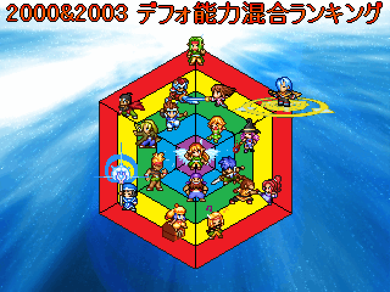

保存資料：2019-03-30の公開ページを再生しています。原HTMLと画像の載荷は保存済みです。
 |
|
| 作者：◆DFEG.5k3XY | |
| ツクール：2000 | |
| ジャンル：見るゲ(ランキング+ミニ講座) | |
| 配信/投稿：可 | |
| 作者コメント： スケールの異なる2000と2003のデフォ能力値を比較可能な形に変換し、 それぞれ能力値を比較し、ランキング形式で紹介します。 【収録内容】(選択可能) ・標準化処理に関する簡単な解説 ・標準得点紹介(2000、2003、2003職業) ・ランキング(総合・個別) ・任意キャラ同士のグラフ比較(SS左下) ・茶番劇 ・(付属)計算用エクセルシート(主人公、モンスター) ※2003のデフォステータス及び仕様は日本語版のものです。 |
|
| 管理人コメント： １位の栄冠を誰が手にするか楽しみです。 |
|
| ダウンロード(1.48MB) / 感想掲示板 | |
| 前の作品 / 次の作品 / TOPへ戻る | |